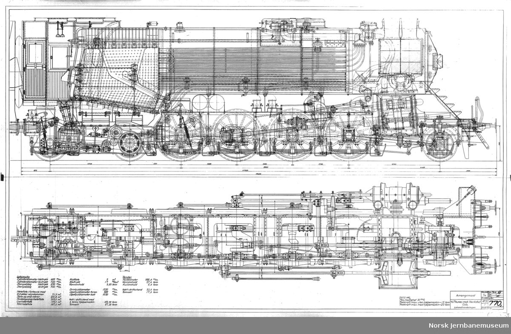
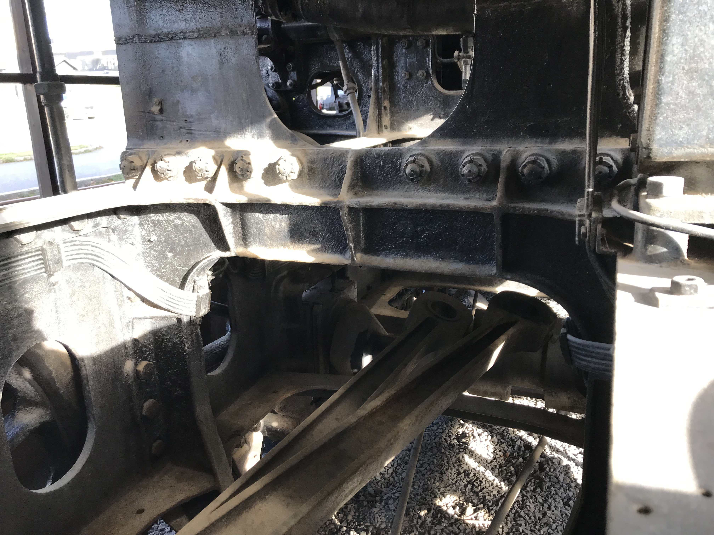

Updated: 4/8/2024
The purpose of a clearance crank is to enable an inside connecting rod to move without fowling on an axle. It must be used in designs where the connecting rod intersects with the volume of the normal axle cylinder. The likelihood that the connecting rod intersects the volume increases as: connecting rod length increases, crank pin radius of travel increases, cylinder angle of inclination decreases, and the distance between the driven and all previous axles decreases.
The crank is made of two opposed S bends with a short horizontal radially moving cylinder in the center. It needs to be designed and positioned such that it does not fowl on the connecting rod whether it's radially moving center is closest or farthest away from the center line of the middle cylinder. The unbalanced mass is low enough such that it does not need to be balanced by counterweights. I don't know of any example of them being balanced but regardless they should be and are easy to perfectly balance to reduce wear.
There are plenty of inside cylinder designs that do not need clearance cranks. For instance: Union Pacific 9000 and all of the famous Gresley 3 cylinder designs.
Schematic |
PhotoPartially Obscured |
|---|---|
|  |  |